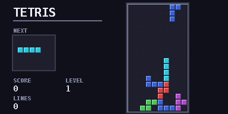

Falling blocks
tetris
Classic falling-block puzzle with levels, a next-piece box and key-repeat tuned for the calculator.
tetris.py7.5 KB283 lines
Performance: smoothRuns smoothly. There is a short flash when lines clear.
Controls
| Left / Right | Move the piece |
| Up | Rotate |
| Down | Soft drop |
| OK | Hard drop |
| Quit | SETTINGS or BACK |
How to run it
- Press Download and save
tetris.py. - Plug the calculator into your computer with its USB cable and pick the connection mode that shows it as a drive.
- Copy
tetris.pyinto the calculator's main memory (the@MainMemfolder). - On the calculator, open the Python app, choose
tetris.pyand run it. - Stop the game any time with
SETTINGS or BACK.
If your browser or school blocks .py downloads, use the zip version and unzip it first. If the calculator says Invalid Data Size, the file was changed on the way over. Download it again and copy the new copy.